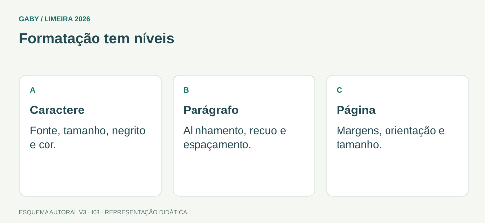

Objetivos do módulo
- Distinguir formatação de caractere e parágrafo.
- Usar alinhamento, espaçamento, recuo e estilos básicos.
- Entender cabeçalho, rodapé, localizar/substituir e edição.
Formatação tem níveis

Descrição em texto do esquema
- Caractere: Fonte, tamanho, negrito e cor.
- Parágrafo: Alinhamento, recuo e espaçamento.
- Página: Margens, orientação e tamanho.
Oficina visual · aplique o esquema
Para destacar um título em negrito e centralizá-lo, quais dois tipos de formatação são usados?
Atividade autoral complementar da V3. Registre sua resposta; a resolução está no arquivo de gabarito e revisão.
Mapa do conteúdo
1. Estrutura do documento
Um documento do Word é composto por texto, parágrafos, seções e objetos. Formatação de caractere afeta fonte, tamanho, negrito, itálico etc.; formatação de parágrafo afeta alinhamento, recuos, espaçamento e listas.
2. Alinhamentos
| Alinhamento | Efeito |
|---|---|
| Esquerda | borda esquerda regular |
| Centralizado | texto centralizado entre margens |
| Direita | borda direita regular |
| Justificado | ajusta espaços para alinhar ambas as margens |
3. Parágrafo
Recuos controlam posição das linhas em relação às margens; espaçamento antes/depois controla distância entre parágrafos; espaçamento entre linhas controla distância vertical dentro do parágrafo. Enter cria novo parágrafo; Shift+Enter insere quebra de linha manual sem novo parágrafo.
4. Edição e revisão
Localizar pesquisa texto; Substituir troca ocorrências de forma controlada. Ctrl+H costuma abrir Substituir. Desfazer/refazer ajudam a corrigir alterações. O recurso “Mostrar tudo” (¶) exibe marcas não imprimíveis, útil para diagnosticar formatação.
5. Cabeçalho e rodapé
Cabeçalho ocupa região superior e rodapé, inferior, podendo conter texto, campos, data e numeração. Podem variar por seção e por primeira página, conforme configuração.
Exemplos resolvidos passo a passo
Exemplo 1
Situação: Você quer alinhar texto nas margens esquerda e direita. Qual alinhamento?
Exemplo 2
Situação: Quer uma nova linha sem criar novo parágrafo.
Exemplo 3
Situação: Quer trocar todas as ocorrências de “2025” por “2026”.
Pegadinhas e erros frequentes
- Usar espaços repetidos para alinhamento.
- Confundir quebra de linha com novo parágrafo.
- Aplicar formatação manual onde estilo seria mais consistente.
Resumo de prova
- Caractere ≠ parágrafo.
- Justificado alinha ambas as margens.
- Shift+Enter quebra linha; Enter cria parágrafo.
- Cabeçalho/rodapé ficam nas regiões superior/inferior.
- Ctrl+H abre Substituir em versões usuais.
Exercícios do módulo
Resolva sem consultar o arquivo de gabarito. As questões são autorais e construídas para treinar os conceitos do edital.
- centralizado
- esquerda
- direita
- justificado
- sublinhado
- impressão
- negrito
- itálico
- extensão .docx
- recuo e espaçamento
- cor do monitor
- senha do arquivo apenas
- quebra de linha manual
- novo documento
- quebra de página
- salvar como
- somente no fim do arquivo
- no menu Iniciar
- na barra de tarefas
- na parte superior da página
- na área de transferência
- no Explorer
- na parte inferior da página
- no título da janela
- mover pasta
- procurar e trocar texto
- criar gráfico
- compactar arquivo
- marcas de formatação não imprimíveis
- apenas imagens
- senha
- metadados de rede
- Esc
- Alt+F4
- F1
- Enter
- orientação da folha apenas
- impressora padrão
- fonte e tamanho
- margem da página somente
Quando terminar, abra Informática 03 - Word - Edição e Formatação - Gabarito e Revisão.
Checklist de domínio
- ☐ Distinguir formatação de caractere e parágrafo.
- ☐ Usar alinhamento, espaçamento, recuo e estilos básicos.
- ☐ Entender cabeçalho, rodapé, localizar/substituir e edição.
Meta do módulo: 80% ou mais nas questões, sem depender de consulta.
Referências e conteúdos auxiliares
- Microsoft — Formatar seu documento do WordComandos de formatação; a interface depende da edição e do dispositivo.
- Microsoft — Adicionar um título a um documento do WordEstilos de título e estrutura do documento para navegação e sumário.
Referências externas de apoio consultadas para a V3 em 27/09/2026. A origem das questões é o material autoral do projeto; estes links não indicam que uma instituição publicou ou validou os exercícios. As páginas externas precisam de internet. Em informática, confira a versão do programa; em legislação, observe o recorte e as regras de atualização do edital.